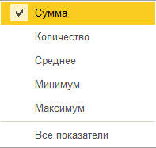

Отчет формируется по организации и кассе предприятия, выбранных в настройках отчета за указанный период. В каждой кассе может быть только одна валюта и только один счет учета денежных средств.
Кассовая книга формируется только, если есть движения за указанный период, то есть, если нет прихода или расхода денег, то отчет не формируется.
Все заполненные кассовые документы (приходные и расходные кассовые ордера) т.е. те документы, по которым произведено получение или выплата денежных средств из кассы, собираются кассиром и на их основании производится заполнение кассовой книги.
В этом отчете регистрируется остаток денежных средств в кассе на начало периода, все операции по приходу и расходу денежных средств за период и выводится остаток наличности в кассе на конец периода.
В верхней части формы отчета можно задать настройки параметров формирования отчета:
• Период - нужно указать период, по которому сформируется отчет.
• Касса - указать кассу, по которой будет формироваться отчет.
• Кнопка Сформировать - при нажатии кнопки сформируется отчет.
По кнопке Показать настройки можно указать следующий ряд параметров:
Настройки Параметры печати
• Разбивать листы по дням. Если признак установлен, то данные за каждый день, в котором были какие-либо движения по кассе, будут выводится на отдельном листе. Если признак не установлен - данные будут выводится единым списком, упорядоченном по дате выписки первичных документов.
• Сортировать документы по виду. В пределах дня документы будут дополнительно упорядочены по виду.
• Сортировать документы по номеру. В пределах дня документы будут дополнительно упорядочены по номеру.
• Номера документов по параметрам учета - при установленном флажке при выводе на печать из номера удаляются префикс и лидирующие нули.
• Выводить основания кассовых ордеров - в отчете будут отражаться данные из поля Основание приходных и расходных кассовых ордеров.
• Выводить название кассы - название кассы будет выходить в заголовке отчета
Вывод разделов отчета
• Печатать вкладной лист - отчет сформируется и распечатается с вкладным листом
• Печатать отчет кассира - отчет сформируется вместе с отчетом кассира, будет разделен отрывной линией.
Действия при формировании отчета
• Сформировать титульный лист. Позволяет получить печатную форму титульного листа кассовой книги по итогам года.
• Пересчитать номера листов с начала года - листы кассовой книги будут пересчитываться с начала года. Если флажок не установлен, нумерация листов за указанный период начинается с номера следующего за последним листом, раннее сформированной кассовой книгой.
Кнопка Печать - по кнопке Печать отчет автоматически распечатается.
Кнопка с желтым конвертом - по этой кнопке можно отправить отчет по электронной почте.
- по этой кнопке можно суммировать данные из отчета (по сумме, по количеству и т.д.).

Раздел книги - через флажок в углу можно выбрать: разделы книги или обложку и титульный лист, сформируется выбранный вариант.
- по кнопке можно раскрыть отчет на весь экран.
Как найти: Банк и касса → Отчеты → Кассовая книга